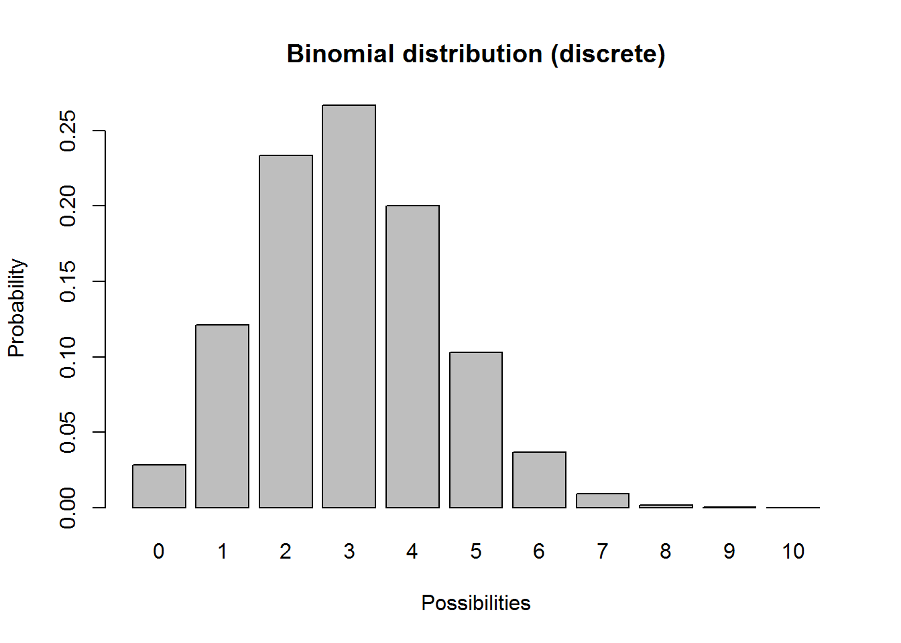
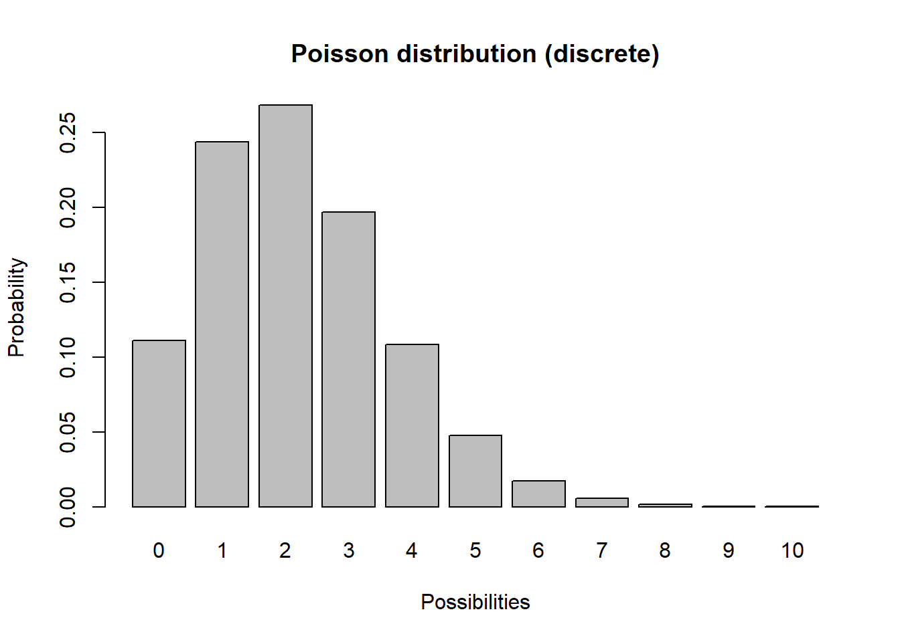
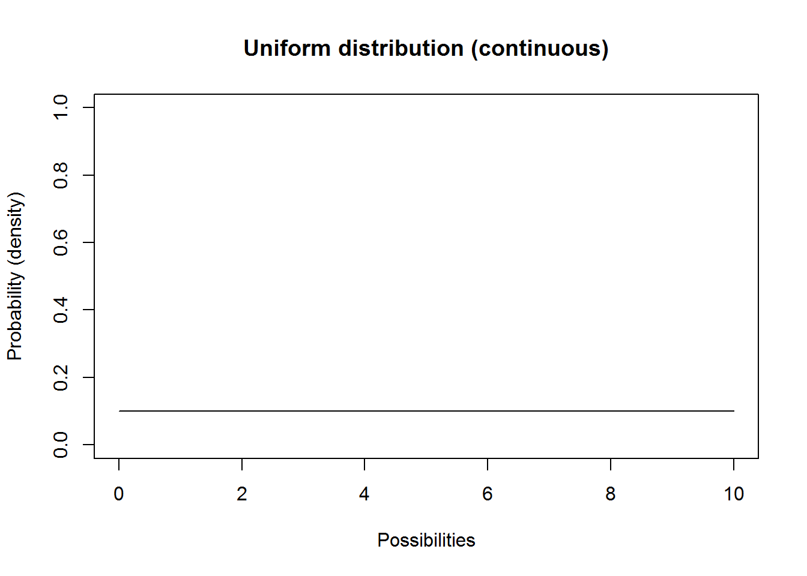
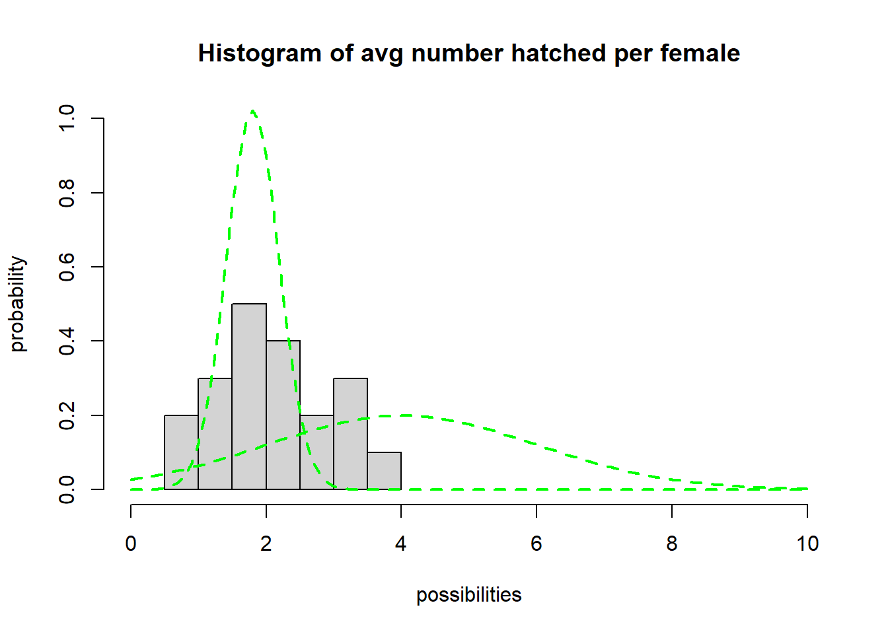
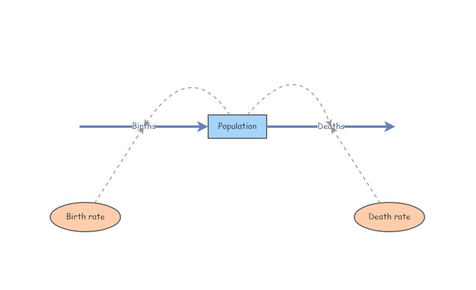

Stochasticity and Uncertainty
NRES 470/670
Spring 2023
To download the R script for this lecture, click here
Upcoming midterm exam
when and where The first midterm exam (out of two) is coming up Wednesday March 15. You will have the whole 50 minute class period to take the exam. The exam will be on paper this year.
what The exam will cover:
- All material in Chapters 1-3 of the Gotelli book including
matrix population modeling concepts.
- All material covered in lectures, including the following web pages
and corresponding lectures and top hat pages:
- Systems thinking and modeling
- Exponential growth
- Malthus and limits to growth
- Logistic population growth
- Allee effect
- Age-structured populations
- Matrix population models
- NOTE: all lectures have been recorded and are available via the
“Zoom” link on WebCampus in case you missed any or in case you’d like to
use these recordings as review/study materials
- All material covered in labs 1-4, including:
- Basic programming concepts:
- Conditional logic (IF-THEN-ELSE): see examples in Malthus and Allee effect lectures
- Iteration (‘FOR loops’): see examples in Lab 1 and Lab 4.
- NOTE: you will NOT be tested on how to run population models in R (or how to do anything else in R).
The exam will consist of a mixture of multiple-choice and short-answer questions
Please bring a calculator- a regular scientific calculator will work fine
We will hold a review session for the exam during our regular class meeting on the Monday prior to the exam (next Monday, March 13). Please make note of any questions that come up as you study- we can talk these over during the review session!
Uncertainty!
All ecological systems are full of uncertainty. We all know it intuitively. But what exactly do we mean by that? And how can we deal with it? How can we incorporate it into our models? How can we communicate it to other researchers, and to managers?
Clearly this is a very important topic- but it is not in the Gotelli book, nor is it in highlighted in most basic ecology textbooks. For this module we are actually diving into the field of probability and statistics!
A taxonomy of uncertainty
There are two major reasons we can be uncertain. Either we lack sufficient knowledge or the system itself is variable and unpredictable. Let’s explore these two types of uncertainty.
You lack sufficient knowledge. This is also known variously as sampling uncertainty, parameter uncertainty, structural uncertainty, and more. In practical terms: if you collected more data you could (in principle) make a better model that more closely represents reality.
The system is inherently variable and unpredictable. In population ecology and systems modeling, this is also known as stochasticity. In practical terms: no matter how much we study and understand a natural system, we can not predict the future with certainty. Ecological systems are inherently variable and unpredictable. We can’t know with certainty whether or not an individual will mate, or die. We can’t really even be certain whether the environmental conditions (e.g., weather) will be favorable or unfavorable for offspring production or mortality!
How to deal with uncertainty
As applied population ecologists, we must embrace uncertainty. we have two major tools to help us manage and account for uncertainty in our study systems: uncertainty analysis and stochastic models
Uncertainty analysis
What if we simply don’t have enough data to build a perfect model? This is an example of lacking sufficient knowledge. In this case, the tool we use is called uncertainty analysis. Basically, we try a range of possible values for a parameter (usually a per-capita vital rate- often modeled as [Variables] in InsightMaker) we are uncertain about (e.g., adult survival rate could be 0.6 or 0.7) and see what happens to our study system (e.g., given the uncertainty we have about the true parameter value, is it plausible that the population will go extinct? Is it plausible that it will decline?).
Stochastic models (demographic and environmental stochasticity)
Second, we usually can’t predict whether an individual will live or die, breed or not breed, etc. All we can know is the probability of mating, or the probability of dying, or the per-capita rate of offspring production, or the probability of a given offspring being female. But when it comes to projecting exactly which individuals live or die (whether an individual will “get lucky” so to speak!), who gives birth and who doesn’t, and how many females are born, we just can’t know for sure. This is an example of a system being inherently unpredictable. In population ecology, this is called demographic stochasticity. In this case, we randomly vary total births and deaths (the [Flows] in InsightMaker) to represent the inherent unpredictability of individual fates within a population.
Third, we usually can’t predict whether next year or the year after will be favorable or unfavorable for population growth- that is, whether the per-capita vital rates (e.g., \(b\), or \(d\) or \(r\)) will be more or less optimal at a future point in time (whether a population will “get lucky”, so to speak). This is another example of a system being inherently unpredictable. In population ecology this is called environmental stochasticity. In this case, we randomly vary per-capita vital rates (represented as [Variables] in InsightMaker) to represent the inherent unpredictability of environmental conditions.

Random number generation
To incorporate uncertainty and randomness into our models, we often include stochastic components so that each model run (replicate) – or each year of each model run – is different from one another (the results are variable). That is, we need to include at least one random number generator in our models! A random number generator is like a lottery ball machine! Each time we want a new number we reach in and pull another number out, record the number, put it back in and shake it up again.

Every random-number generator has a distribution. This is a way of defining what exactly is in the box. This can be visualized as a boxplot or histogram, with the unique possible values represented on the X axis and the probabilities associated with each unique value represented on the Y axis.
If you want to follow along with this lecture in R, you can find the R script here. I recommend right-clicking on the link, saving the script to a designated folder (ideally, your project directory), and loading up the script in RStudio.
For example, the box might have 10 “ones”, 5 “twos”, and 2 “threes”. In this case the distribution looks like this (probability of each possibility):
#############
# Random number generation!
#####
# define an arbitrary distribution
box <- c(rep(1,10),rep(2,5),rep(3,2)) # define what's in the lottery ball machine (10 "1" balls, 5 "2" balls and 2 "3" balls)
barplot(table(box)/sum(table(box)),ylab="probability",xlab="possibility") # visualize the distribution of possibilities
A probability distribution can be pretty much anything you want it to be. However, there are several key families of probability distributions that come up again and again, and we should learn them!
Probability distributions
Discrete vs. continuous
In discrete distributions, each unique outcome has a specific probability (like the probability of flipping a coin 10 times and getting 4 heads). For practical purposes in this class, discrete distributions produce integers and are used to represent demographic stochasticity (variation in the total number of births and deaths even if per-capita vital rates don’t change). For example, let’s consider a binomial distribution
################
# Discrete distributions
################
#######
# Example: binomial distribution (coin flipping distribution)
# plot a discrete distribution!
xvals <- seq(0,10,1)
probs <- dbinom(xvals,10,prob=0.3)
names(probs) <- xvals
barplot(probs,ylab="Probability",xlab="Possibilities",main="Binomial distribution (discrete)")
Q What population parameter might the binomial distribution be useful for modeling?
Another discrete distribution we will use in this class is the Poisson distribution:
#########
# Poisson distribution
xvals <- seq(0,10,1)
probs <- dpois(xvals,lambda=2.2) # POisson distribution
names(probs) <- xvals
barplot(probs,ylab="Probability",xlab="Possibilities",main="Poisson distribution (discrete)")
Q What population parameter might the Poisson distribution be useful for modeling?
In continuous distributions, there are an infinite number of possibilities between any two unique possibilities. For practical purposes in this class, continuous distributions produce numbers with decimal components and are used to represent environmental stochasticity (variability in per-capita vital rates).
Let’s consider the uniform distribution:
################
# CONTINUOUS DISTRIBUTIONS
#################
##########
# Uniform distribution
lower = 0
upper = 10
curve(dunif(x,lower,upper),0,10,ylab="Probability (density)",xlab="Possibilities",main="Uniform distribution (continuous)",ylim=c(0,1)) # probability density
This isn’t a very interesting looking distribution. All possible numbers from 0 to 10 are equally probable.
Another continuous distribution you should know is called the Normal distribution. This distribution (the classic bell-shaped distribution) has a lower bound of \(-\infty\) and an upper bound of \(\infty\).
#########
# Normal distribution
mean = 7.1
stdev = 1.9
curve(dnorm(x,mean,stdev),0,15,ylab="Probability (density)",xlab="Possibilities",main="Normal distribution (continuous)") # probability density
Q What population parameter(s) might this distribution be useful for modeling?
Explore distributions in R
Let’s play around with distributions a little using R.
Note that all these distributions are also available to you in InsightMaker.
Here’s some R syntax for you!
Note that all the R random number generators are functions that start with the letter “r” – for “random”.
Random number generators are functions (“machines” that take inputs and transform the inputs (arguments) into useful outputs – in R, that means you will use the following syntax:
thisfunction([argument 1],[argument 2] ... )
myresults <- thisfunction([argument 1],[argument 2] ... )
The first argument (specified within the parentheses in a function call) represents how many random numbers you want R to draw from the specified distribution.
The arguments after that represent the parameters of the random distribution you wish to draw from – you can modify these parameters to suit your needs. Here are some examples (drawing 1 random number at a time):
################
# Random number generation!
### Binomial random number generator
rbinom(1,size=10,prob=0.5) # note: "size" is the number of coin flips, and "prob" is the probability of coming up 'heads'
### Poisson random number generator
rpois(1,lambda=4.1) # note: "lambda" represents the mean (and variance!) of the Poisson distribution
### Uniform random number generator
runif(1,min=1,max=3.5) # "min" and "max" are pretty obvious!
### Normal random number generator
rnorm(1,mean=3,sd=4.1) # normal distribution is defined by "mean" and "sd" (standard deviation).tophat In R, generate one random number from a Binomial distribution with 10 trials and probability of success equal to 0.3
tophat In R, generate one random number from a Poisson distribution with mean of 2.1
tophat In R, generate one random number from a Normal distribution with mean of 1.75 and standard deviation of 0.9
Can you modify one of the above functions to produce more than 1 random number?
Try to modify one of the other parameters and generate 100 random numbers? To visualize the distribution you can use the “hist()” function to produce a histogram of the random distribution you just generated!
In-Class Exercise: Fit a distribution!
Let’s imagine we have studied a large population of canvasback ducks over a 20 year period and we have estimated the average number of eggs successfully hatched per female (per-capita birth rate) for each of 20 consecutive years.
We first enter these numbers into R and visualize the distribution:
#############
# Demonstration: use data to determine a distribution!
#############
#############
# Made-up canvasback data- average number of eggs hatched per female for 20 years
hatch_perfem <- c(3.05, 1.45, 0.99, 3.24, 1.49, 1.70, 1.66, 2.32, 0.83, 2.41,
2.33, 1.68, 1.43, 2.74, 2.05, 3.13, 1.90, 3.69, 1.55, 2.79)
hist(hatch_perfem)
Q: What type of uncertainty does this set of values most likely represent? What random number generator might you use to represent this uncertainty? [tophat]
Now let’s try to fit a distribution to these data! Let’s use a normal distribution. (NOTE: technically speaking we might want to use a distribution that can’t produce negative numbers- like the log-normal distribution, but we will usually use the normal distribution in this class for simplicity)
We could use statistics to fit the distribution, but for now we are just going to use trial and error! Here is some code to help you get started.
Note that the normal distribution has two parameters: the first (‘mean’) helps to define the mean (obviously!) and the other (‘sd’) determines the variability of the distribution.
############
# Try to identify a normal distribution to represent the canvasback data
## first, plot a histogram of the data from the 20-year study
hist(hatch_perfem,freq=F,main="Histogram of avg number hatched per female",xlab="possibilities",ylab="probability",xlim=c(0,10),ylim=c(0,1))
## now, overlay a normal probability distribution with arbitrary parameters (mean and sd). This is just a starting point.
curve(dnorm(x,mean=4,sd=2),col="green",lty=2,lwd=2,add=T)
curve(dnorm(x,mean=1.8,sd=0.39),col="green",lty=2,lwd=2,add=T) # try a different value...
#### Keep changing the value for 'mean' and 'sd' until you find best parameters to fit the data!
#### Once you find the best-fit parameters, generate 5 random numbers from this distribution using the "rnorm()" function in R
rnorm(5,mean=4,sd=1) # for example! (remember to change the "mean" and "sd" parameters to the values you identified above!)## [1] 4.004980 3.606375 3.100934 4.527763 3.447750- Use trial-and-error to find appropriate “mean” and “sd” parameters for the normal distribution.
Q: what is the best-fit value for “mean”? [tophat] Q: what is the best-fit value for “sd”? [tophat]
- Use your fitted distribution to predict the per-capita production of hatchlings for the next 5 years. To do this, use the “rnorm()” function in R.
In-Class Exercise 2: Stochasticity and Uncertainty in InsightMaker
These concepts (like everything in this class) are best understood by building models.
Let’s start with a basic exponentially growing population that looks something like this:

You can clone this one if you’d like: https://insightmaker.com/insight/2WNEa6ZT3Z23CfLbuQqfJR/base-exp-growth-b-and-d
Parameter Uncertainty
Set Birth rate equal to 0.4 and Death rate equal to 0.3. Set initial abundance to 10. Under the “Settings” menu, set the model to run for 10 years. Make sure your Population stock can not go negative (this is a setting in the configuration panel). Hit “Simulate”- you should see exponential growth!
Parameter uncertainty: What if we have imperfect knowledge about birth rate? The birth rate could be anything from 0.2 to 0.5. Run the model with the lowest and the highest possible birth rate. NOTE: you can give each results plot a title using the gear-shaped symbol at the top of your plot window- that way you can name your scenarios – e.g., “min birth rate”.
Now use the “Compare Results” tool (under the “Tools” menu in the upper right corner…) to visualize the range of possible population growth trajectories that would be possible given our uncertainty (lack of knowledge) about birth rate.
Q What is the range of possible final abundances after 10 years?
Q Should we study this system more if we want to know whether the population is growing or declining??
Demographic Stochasticity
Set Birth rate back to 0.4. Hit “Simulate”- make sure you still see exponential growth!
We will use a Binomial distribution to represent the number of mortalities. That is, we flip a coin the same number of times as there are individuals in the population. If the coin comes up heads, then the individual dies. In this case we are using a biased coin- it only comes up heads 30% of the time! The Binomial distribution essentially represents the number of times heads came up. To do this in InsightMaker, use the following formula for the Deaths flow (you can use the right-hand “Random Number Functions” menu to auto-type the proper syntax):
RandBinomial([Population], [Death rate])In plain English: the number of deaths each year is a random quantity determined by “coin-flipping” (Binomial distribution is the “coin flip” distribution). The total deaths is computed by flipping a coin for each individual in the population and killing off all individuals that come out ‘heads’ (where the probability of coming up ‘heads’ is the death rate).
For the total births, \(B\) we will use the Poisson distribution. The Poisson distribution is often use to represent births, because it produces whole numbers, can’t go negative, AND it has no hard upper limit (unlike the binomial distribution).
NOTE: there could feasibly be more births than there are individuals currently in the population (e.g., if all individuals have two offspring!). This would not be possible with a binomial distribution! That is, you can’t get more “heads” (deaths) than the total number of coin flips (individuals in the population).
To do this in InsightMaker, use the following formula for the Births flow:
RandPoisson([Population]*[Birth rate])-or-
Lambda <- [Population]*[Birth rate]
RandPoisson(Lambda)In plain English: the number of births ([Births] flow in InsightMaker) is a random draw from a Poisson random number generator with a mean (Lambda) equal to the expected number of births ([Population]*[Birth rate]).
Run the simulation. What does it look like?
Use the “Sensitivity Testing” tool (in the “Tools” menu, upper right corner) to run the model 50 times. Choose [Population] as the “Monitored Primitive”. NOTE: I recommend choosing the “Plot Each Run” button – that way we can generate a “spaghetti plot”.
Change the initial abundance to 500 and re-run the “Sensitivity Testing” tool.
Q Is the effect of demographic stochasticity larger or smaller at low or high abundances?
Environmental Stochasticity
- Set Births back to what it was before ([Population]x[Birth rate]), and do the same for Deaths ([Population]x[Death rate]).
- We will use a Normal distribution to represent how the per-capita birth rate changes each year. This could represent climatic variablity – “good years” and “bad years”. The Normal distribution is commonly used for this type of variability- it is characterized by an average value (mean) and a variability measure (standard deviation). To do this in InsightMaker, use the following formula for the Birth Rate variable:
RandNormal(0.4, 0.4)Similarly, use the following formula for the Death Rate variable:
RandNormal(0.3, 0.3)Use the “Sensitivity Testing” tool (in the “Tools” menu, upper right corner) to run the model 50 times. Choose [Population] as the “Monitored Primitive”.
Change the initial abundance to 500 and re-run the “Sensitivity Testing” tool.
Q Is the effect of environmental stochasticity bigger at low or high abundances?
- Note that the normal distribution CAN go below zero or above 1, which is not always biologically realistic! However, as we have seen before, InsightMaker does not allow a [Flow In] to remove from a [Stock] or a [Flow Out] to add to a [Stock], so we don’t really need to worry about this problem! That is, InsightMaker will truncate the normal distribution for us. Alternatively (if we want to be very explicit) we could just truncate the normal distribution ourselves. That is, if the random number you draw comes out below zero, just make it zero!
For the [Birth Rate] variable in InsightMaker, this can be done like this:
Max(0,RandNormal(0.4, 0.4))Q Can you implement a catastrophe scenario? That is, make a scenario where there is a low probability of an event (e.g., flood, disease, drought) that causes very high mortality and/or very low birth rate?
A catastrophe can be implemented by using an IF-THEN-ELSE statement: if the random number is below some rare value (e.g., 0.05) then cause a catastrophe to occur (otherwise keep all vital rates at their normal values)!
Hint: The most basic (most commonly used) random number generator draws numbers from a uniform distribution with a minimum of 0 and a maximum of 1. To do this in InsightMaker, you can use this syntax:
Rand(0, 1)Q What if environmental stochasticity influences survival and fecundity in the same manner? That is: what if a “good year” for births is also a good year for survival? Would this increase or decrease the effect of environmental stochasticity on population dynamics? In InsightMaker, try to implement a scenario where the environmental stochasticity in survival rate is perfectly correlated with environmental stochasticity in birth rate.
Hint: you will need another [variable] in your InsightMaker canvas- this variable could be named something like “Forage Quality”, and should store a random draw from a Normal distribution with mean “0” and standard deviation “1”:
RandNormal(0, 1)Next, you can alter your per-capita fecundity parameter to have the following syntax, which would represent a mean fecundity of 0.85 with a standard deviation of 0.4
0.85+0.4*[forage quality]